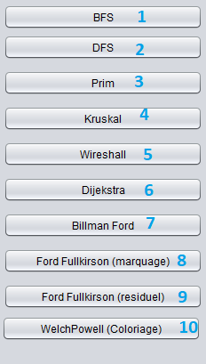

Cette application nous permettera de créer des différent types de graphes (orienté, pondéré,...) tous on appliquant différent algorithmes sur ces graphes
Interface
L'interface de cette application ce compose en 3 parties :
La première est celle des buttons à gauche, il permet de
lancer les algorithmes sur le graphe déjà créé.
 La deuxième est le grand espace au milieu, cet espace vos
permes de dessiner le graphe et déplacer les noeuds que vous
désirez.
La deuxième est le grand espace au milieu, cet espace vos
permes de dessiner le graphe et déplacer les noeuds que vous
désirez.
 La troisième est dans lequele vous pouvez voir le résultat de
l'algorithme que vous choisissez.
La troisième est dans lequele vous pouvez voir le résultat de
l'algorithme que vous choisissez.

La deuxième est le grand espace au milieu, cet espace vos
permes de dessiner le graphe et déplacer les noeuds que vous
désirez.
La troisième est dans lequele vous pouvez voir le résultat de
l'algorithme que vous choisissez.
3
Algorithmes
Pour les algorithmes on va concentrer vers ce côté de l'application:  Chaque bouton represente un algorithme.
1
c'est l'algorithme de BFS (L'algorithme de parcours en largeur),
pour que ce bouton soit cliquable il faut sélectionner un sommet
de départ.
2
c'est l'algorithme de DFS(L'algorithme de parcours en
profondeur), pour que ce bouton soit cliquable il faut
sélectionner un sommet de départ.
3
c'est l'algorithme de Prim(Un algorithme glouton qui calcule un
arbre couvrant minimal dans un graphe connexe non-orienté et
pondéré), pour que ce bouton soit cliquable il faut qu'il exist
ou moins un sommet dans un graphe qui soit non orienté et
pondéré.
4
c'est l'algorithme de Kruskal(un algorithme de recherche d'arbre
recouvrant de poids minimum (ARPM) ou arbre couvrant minimum
(ACM) dans un graphe connexe non-orienté et pondéré), pour que
ce bouton soit cliquable il faut qu'il exist ou moins un sommet
dans un graphe qui soit non orienté et pondéré.
5
c'est l'algorithme de Wareshall(un algorithme agissant sur un
graphe. Il permet de construire la fermeture transitive d'un
graphe orienté ou non orienté), pour que ce bouton soit
cliquable il faut qu'il exist ou moins un sommet dans un graphe
orienté ou non.
6
c'est l'algorithme de Dijekstra(un algorithme qui calcule des
plus courts chemins à partir d'une source vers tous les autres
sommets dans un graphe orienté pondéré par des réels positif),
pour que ce bouton soit cliquable il faut que le graphe soit
orienté et pondéré.
7
c'est l'algorithme de Ford Fullkirson methode de marquage(un
algorithme pour le problème du flot maximum en marquant les
sommet par +/-), pour que ce bouton soit cliquable il faut que
le graphe soit orienté et pondéré.
8
c'est l'algorithme de Ford Fullkirson methode residuel(un
algorithme pour le problème du flot maximum), pour que ce bouton
soit cliquable il faut que le graphe soit orienté et pondéré.